Home / Past papers / MLP End Term / this paper
IIT M FOUNDATION DIPLOMA AN EXAM - 22 Dec 2024
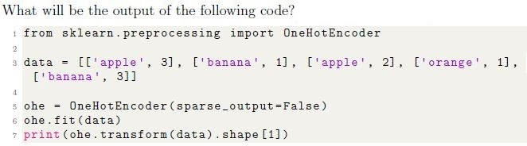
- 4
- 5
- 3
- 6
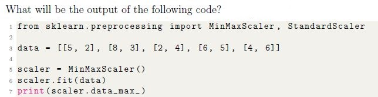
- [5, 6]
- [4, 5]
- [8, 6]
- [2, 3]
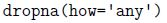
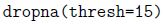
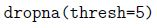
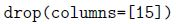
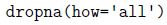
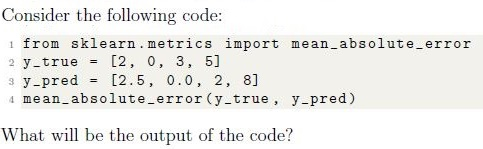
- 1.25
- 2.56
- 4.25
- 1.12
- Given code will return an error.
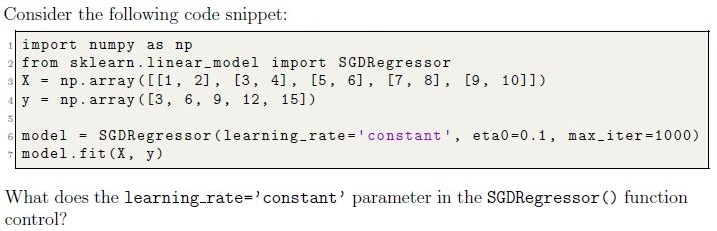
- It adjusts the learning rate based on the number of iterations.
- It defines the initial value for the learning rate and keeps it constantthroughout training.
- It determines the maximum step size allowed during training.
- It specifies the fraction of the dataset used for each step in the stochasticgradient descent.

- It determines the number of features to select for each base model.
- It controls the number of base learners (models) to train in the ensemble.
- It decides the maximum number of samples to use in each base model.
- It ensures randomness in the sample selection for each base model.
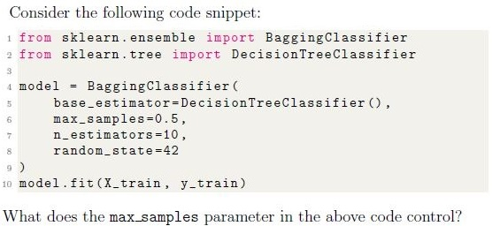
- The percentage of training samples used to train each base estimator.
- The number of base estimators trained on subsets of the training data.
- The maximum number of features used by each base estimator duringtraining.
- The total number of samples used to train all base estimators combined.
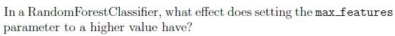
- It increases the variance among individual trees.
- It decreases the variance among individual trees.
- It reduces the number of samples used for training each tree.
- It reduces overfitting by restricting tree depth.

- The total amount spent by each customer.
- The cluster assignments indicating which group each customer belongs to.
- The number of items purchased by each customer.
- The centroid coordinates of the clusters formed.
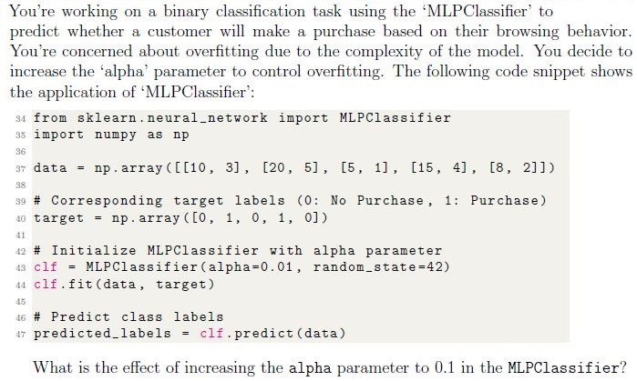
- It increases the model’s capacity to fit the training data closely, potentiallycausing overfitting.
- It adds a stronger regularization term to the loss function, reducing themodel’s complexity and helping prevent overfitting.
- It makes the model more prone to overfitting by increasing its sensitivity tonoise in the training data.
- It directly affects the learning rate, controlling how fast the model convergesduring training.
- Both statements are True
- Only statement 1 is True
- Only statement 2 is True
- Both statements are False
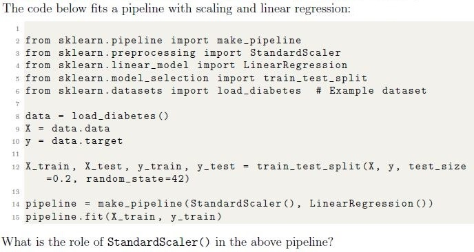
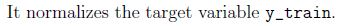
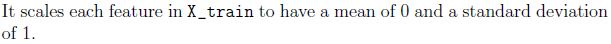
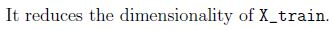
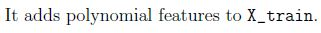
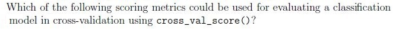
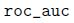
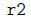
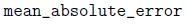
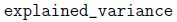
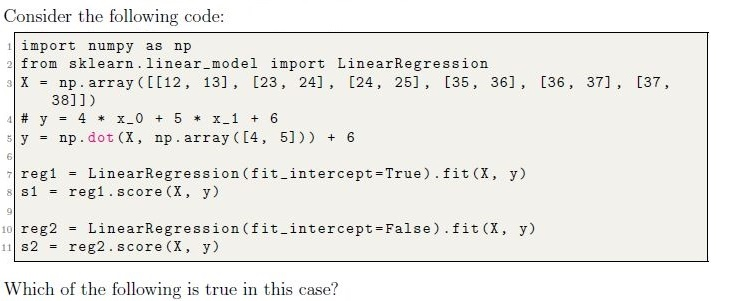
- s1 = s2
- s1 < s2
- s1 > s2
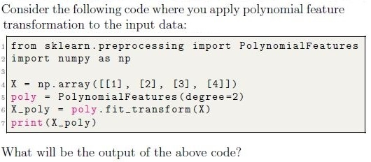
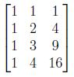
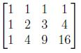
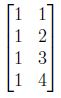
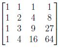
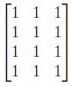
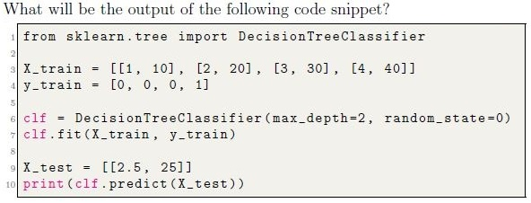
- [0]
- [1]
- [0.5]
- [2]
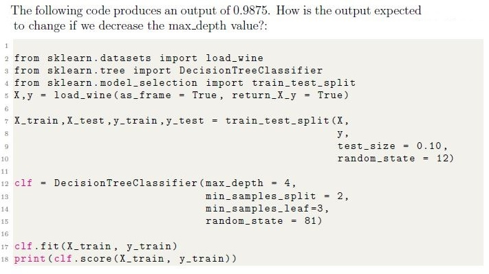
- Output score is likely to increase.
- Output score is likely to decrease.
- Output score may increase or decrease depending on other factors.
- Output score will remain the same.

- Outputs the number of iterations and the final silhouette score of the clusters.
- Outputs the cluster labels for each data point and the maximum distancebetween clusters.
- Outputs the coordinates of the cluster centroids and the number of points ineach cluster.
- Outputs the coordinates of the cluster centroids and the sum of squareddistances of samples to their closest cluster center.
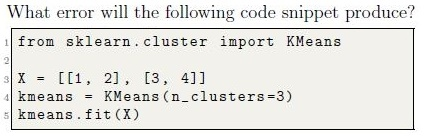
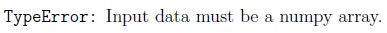
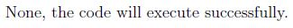
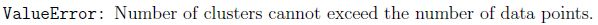
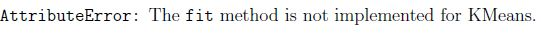
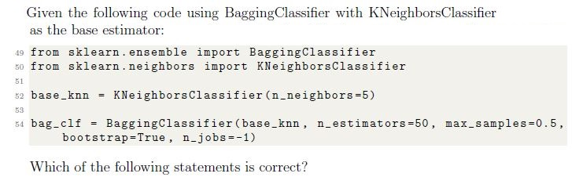
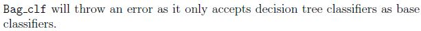
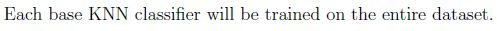
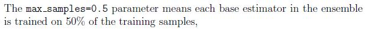
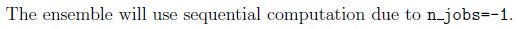
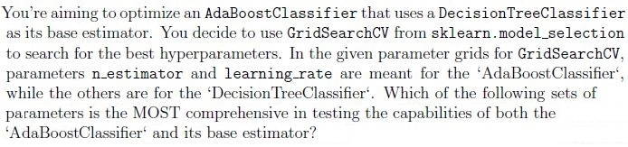
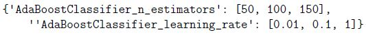
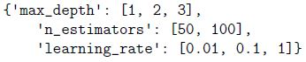
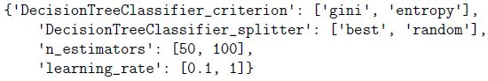
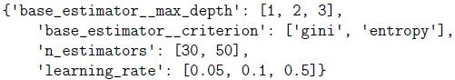
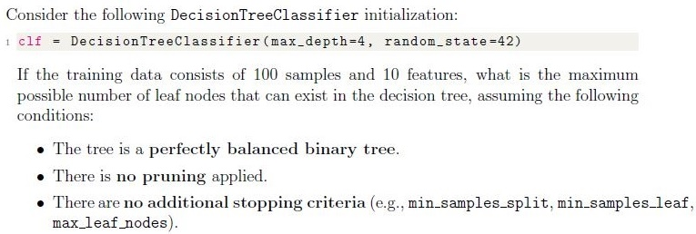
- 8
- 16
- 32
- 64
- PCA (Principal Component Analysis)
- StandardScaler
- Lasso Regression
- t-SNE (t-distributed Stochastic Neighbor Embedding)
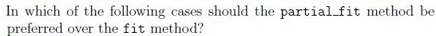
- When data is streaming or generated incrementally.
- When the dataset is small.
- When the dataset cannot fit in memory.
- When the training labels are noisy.
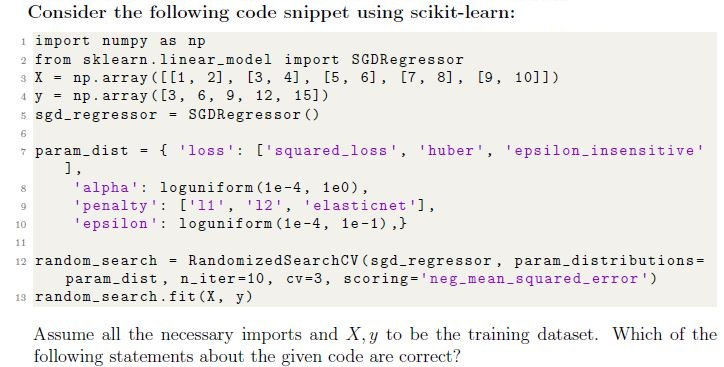
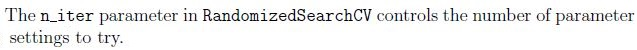
- [1, 2, 3, 6, 7]
- [1, 2, 3, 4, 5, 7]
- [2, 4, 6, 8]
- [1, 2, 3, 6, 8, 9]
- [2, 5, 8]
- [4, 5, 6, 7, 8, 9]

- The neural network contains 3 hidden layers with 5 neurons in each hiddenlayer
- The neural network contains 5 hidden layers with 3 neurons in each hiddenlayer
- The neural network contains 2 hidden layers with 3 neurons in the secondhidden layer
- The neural network contains 2 hidden layers with 5 neurons in the first hiddenlayer
- None of the given options are correct
- The number of samples at node N is 15. If split, the left child will have 10samples, and the right child will have 5 samples.
- The number of samples at node N is 8. If split, the left child will have 4samples, and the right child will have 4 samples.
- The number of samples at node N is 9. If split, the left child will have 2samples, and the right child will have 7 samples.
- The number of samples at node N is 14. If split, the left child will have 4samples, and the right child will have 10 samples.
- The number of samples at node N is 6. If split, the left child will have 3samples, and the right child will have 3 samples.
- The total sales for each region.
- The average sales for each month.
- The average sales for each region.
- None of these.
Answer key
- Q1 (MCQ, 2 marks): D
- Q2 (MCQ, 2 marks): C
- Q3 (MCQ, 2 marks): B
- Q4 (MCQ, 2 marks): D
- Q5 (MCQ, 2 marks): B
- Q6 (MCQ, 2 marks): B
- Q7 (MCQ, 2 marks): A
- Q8 (MCQ, 2 marks): B
- Q9 (MCQ, 2 marks): B
- Q10 (MCQ, 2 marks): B
- Q11 (MCQ, 2 marks): B
- Q12 (MCQ, 3 marks): B
- Q13 (MCQ, 3 marks): A
- Q14 (MCQ, 3 marks): A
- Q15 (MCQ, 3 marks): A
- Q16 (MCQ, 3 marks): A
- Q17 (MCQ, 3 marks): B
- Q18 (MCQ, 3 marks): D
- Q19 (MCQ, 3 marks): C
- Q20 (MCQ, 3 marks): C
- Q21 (MCQ, 3 marks): D
- Q22 (MCQ, 4 marks): B
- Q23 (MSQ, 2 marks): A, C, D
- Q24 (MSQ, 2 marks): A, C
- Q25 (MSQ, 3 marks): A, C, D
- Q26 (MSQ, 3 marks): B, D, F
- Q27 (MSQ, 3 marks): A, C, D
- Q28 (MSQ, 3 marks): A, C, D
- Q29 (MSQ, 3 marks): A, B, C
- Q30 (MSQ, 3 marks): C, D
- Q31 (MSQ, 4 marks): A, B, D
- Q32 (SA, 3 marks): 4
- Q33 (SA, 3 marks): 0.6
- Q34 (SA, 3 marks): 0
- Q35 (MCQ, 2 marks): A
- Q36 (MSQ, 2 marks): A, B, C
- Q37 (MSQ, 3 marks): A, C, D
- Q38 (MCQ, 2 marks): C
Concepts this paper tests
Auto-generated summary from the source site. Handy as a checklist; the lessons above explain each idea from scratch.
Here’s a structured summary of core topics, concepts, principles, and equations essential for the Diploma Level: Machine Learning Practice (Computer-Based Exam). The summary is organized by topic clusters for clarity, followed by Mermaid knowledge graphs to visualize relationships.
1. Data Preprocessing
Core Concepts
Handling Missing Data:
df.dropna(thresh=N): Drops rows with fewer thanNnon-null values.SimpleImputer(mean/median/mode) orKNNImputerfor advanced imputation.
Feature Scaling:
- Standardization (
StandardScaler): Transforms features to have mean = 0 and std = 1. Equation:
- Standardization (
- Normalization (
MinMaxScaler): Scales features to a range (default: [0, 1]). Equation:
Robust Scaling (
RobustScaler): Uses median/IQR (for outliers).- Categorical Encoding:
One-Hot Encoding (
OneHotEncoder): Converts categorical features into binary columns. Example:['apple', 'banana']→[1, 0]and[0, 1].sparse_output=Falsereturns a dense array.- Output shape:
(n_samples, n_categories + n_numerical_features).
Label Encoding (
LabelEncoder): Assigns integers to categories (not for nominal data).- Polynomial Features (
PolynomialFeatures):
Generates polynomial/combination features (e.g., ). Example:
degree=2for input[a, b]→[1, a, b, a², ab, b²].- Feature Selection:
- Polynomial Features (
VarianceThreshold: Removes low-variance features.SelectKBest: Selects top-k features using statistical tests (e.g., ANOVA, chi-squared).
Key Equations
| Method | Equation |
|---|---|
| Standard Scaling | |
| Min-Max Scaling | |
| Polynomial Features | (degree=2) |
2. Supervised Learning
Core Algorithms
Linear Models
Linear Regression:
- Predicts continuous targets: .
- Loss: Mean Squared Error (MSE).
Regularization:
- Ridge (L2): Penalizes large weights ().
- Lasso (L1): Penalizes weights (), can zero out features.
- Elastic Net: Combines L1 and L2.
Logistic Regression:
- Binary classification: , where is the sigmoid.
- Loss: Log Loss (Cross-Entropy).
- Multinomial: For multi-class (softmax activation).
Tree-Based Models
Decision Trees:
- Splits data based on feature thresholds (e.g., Gini impurity, entropy).
Hyperparameters:
max_depth: Limits tree depth.min_samples_split: Minimum samples to split a node.min_samples_leaf: Minimum samples in a leaf.
- Equation (Gini Impurity):
Random Forest:
- Ensemble of decision trees (bagging).
Key Parameters:
n_estimators: Number of trees.max_features: Features considered per split (default:sqrt(n_features)).
Gradient Boosting (e.g.,
GradientBoostingClassifier):- Sequentially corrects errors of previous trees.
Hyperparameters:
learning_rate: Shrinks contribution of each tree.n_estimators: Number of boosting stages.
Support Vector Machines (SVM)
Linear SVM:
- Finds hyperplane maximizing margin: .
- Hinge Loss: .
Kernel Trick:
- Maps data to higher dimensions (e.g., RBF, polynomial).
Neural Networks (MLPClassifier/MLPRegressor)
Architecture:
hidden_layer_sizes=(5, 3): 2 hidden layers (5 neurons → 3 neurons).
Regularization:
alpha: L2 penalty term (higheralpha→ more regularization).
Activation Functions:
- ReLU, sigmoid, tanh.
k-Nearest Neighbors (KNN)
- Prediction: Majority vote (classification) or average (regression) of k nearest neighbors.
- Distance Metrics: Euclidean, Manhattan.
Hyperparameters:
n_neighbors: Number of neighbors.weights: Uniform or distance-weighted.
Key Equations
| Model | Equation |
|---|---|
| Linear Regression | |
| Logistic Regression | |
| SVM (Hinge Loss) | |
| Gini Impurity | |
| Entropy |
3. Unsupervised Learning
Core Algorithms
k-Means Clustering:
- Assigns points to k clusters by minimizing within-cluster variance.
Steps:
- Initialize centroids randomly.
- Assign points to nearest centroid.
- Update centroids as mean of assigned points.
Hyperparameters:
n_clusters: Number of clusters.init: Initialization method (e.g.,k-means++).
- Inertia: Sum of squared distances to centroids (lower = better).
Principal Component Analysis (PCA):
- Linear dimensionality reduction via singular value decomposition (SVD).
- Variance Explained: Eigenvalues of covariance matrix.
t-SNE:
- Non-linear dimensionality reduction for visualization.
Key Equations
| Method | Equation |
|---|---|
| k-Means | (inertia) |
| PCA | (where are eigenvectors of ) |
4. Model Evaluation
Metrics
| Task | Metrics |
|---|---|
| Regression | - Mean Absolute Error (MAE): |
| - Mean Squared Error (MSE): | |
| - R² Score: | |
| Classification | - Accuracy: |
| - Precision: | |
| - Recall: | |
| - F1 Score: | |
| - ROC-AUC: Area under ROC curve (TPR vs. FPR). | |
| - Log Loss: |
Cross-Validation
- k-Fold CV: Splits data into k folds; trains on k-1 folds, tests on 1.
- StratifiedKFold: Preserves class distribution in folds.
cross_val_score: Computes metric for each fold.
Hyperparameter Tuning
- Grid Search (
GridSearchCV): Exhaustively tests all parameter combinations. - Random Search (
RandomizedSearchCV): Samples random combinations (faster for large spaces). Example Parameters:
param_grid = { 'n_estimators': [50, 100], 'learning_rate': [0.1, 0.01], 'max_depth': [3, 5] }
5. Ensemble Methods
Core Concepts
| Method | Description |
|---|---|
| Bagging | Trains multiple models on bootstrapped samples (e.g., BaggingClassifier). |
- max_samples: Fraction of samples per estimator. | |
- n_estimators: Number of base models. | |
| Boosting | Sequentially corrects errors (e.g., AdaBoost, Gradient Boosting). |
- learning_rate: Controls contribution of each model. | |
| Stacking | Combines predictions of multiple models via a meta-model. |
| Voting | Averages predictions (hard/voting for classification, soft for regression). |
Key Algorithms
AdaBoost:
- Weights misclassified samples higher in subsequent iterations.
Gradient Boosting:
- Fits new models to residuals of previous predictions.
Random Forest:
- Bagging with decision trees + feature randomness (
max_features).
- Bagging with decision trees + feature randomness (
6. Model Deployment & Incremental Learning
Core Concepts
partial_fit:- Updates model incrementally (for streaming data).
- Requires
classesparameter for first call (inSGDClassifier).
Pipelines:
- Chains preprocessing and modeling (e.g.,
make_pipeline(StandardScaler(), LinearRegression())).
- Chains preprocessing and modeling (e.g.,
Model Persistence:
- Save/load models with
jobliborpickle.
- Save/load models with
7. Clustering Evaluation
| Metric | Description |
|---|---|
| Inertia | Sum of squared distances to centroids (k-means). |
| Silhouette Score | Measures cohesion/separation: , where = intra-cluster distance, = inter-cluster distance. |
| Elbow Method | Plot inertia vs. k; choose k at the "elbow". |
8. Dimensionality Reduction
| Method | Use Case |
|---|---|
| PCA | Linear reduction; maximizes variance. |
| t-SNE | Non-linear visualization (preserves local structure). |
| Lasso Regression | Feature selection via L1 regularization. |
9. Handling Imbalanced Data
Resampling:
- Oversampling minority class (SMOTE).
- Undersampling majority class.
Class Weights:
class_weight='balanced'in sklearn models.
10. Python Libraries & Functions
| Library/Function | Purpose |
|---|---|
sklearn.preprocessing | Scaling, encoding, polynomial features. |
sklearn.model_selection | Train-test split, cross-validation, hyperparameter tuning. |
sklearn.ensemble | Random Forest, Gradient Boosting, Bagging. |
sklearn.cluster | k-Means, DBSCAN. |
sklearn.decomposition | PCA, t-SNE. |
sklearn.metrics | Accuracy, precision, recall, ROC-AUC, MSE, etc. |
pandas | Data manipulation (dropna, groupby, query). |
numpy | Numerical operations. |
Graph 2: Supervised Learning Algorithms
Graph 3: Model Evaluation & Tuning
Graph 4: Unsupervised Learning
Graph 5: Ensemble Methods
Graph 6: Neural Networks
Exam Tips
Focus on Equations:
- Memorize scaling formulas (Standard/Min-Max), loss functions (MSE, Log Loss, Hinge Loss), and metrics (Precision, Recall, F1, R²).
Sklearn Syntax:
- Know how to initialize, fit, and predict with models (e.g.,
model.fit(X_train, y_train)). - Understand hyperparameters (e.g.,
n_estimators,max_depth,learning_rate).
- Know how to initialize, fit, and predict with models (e.g.,
Data Preprocessing:
- When to use StandardScaler vs. MinMaxScaler.
- How OneHotEncoder affects feature dimensions.
Model Evaluation:
- Difference between accuracy, precision, recall, and F1.
- When to use ROC-AUC vs. Log Loss.
Ensemble Methods:
- Bagging vs. Boosting: Bagging reduces variance; boosting reduces bias.
- Random Forest vs. Gradient Boosting: RF uses bagging; GB is sequential.
Clustering:
- k-Means: How to choose k (elbow method/silhouette score).
- Inertia: Lower = better clustering.
Dimensionality Reduction:
- PCA: Explained variance ratio.
- t-SNE: For visualization (non-linear).
Incremental Learning:
- Use
partial_fitfor streaming data (e.g.,SGDClassifier).
- Use
Pipelines:
- Chain steps (e.g.,
Pipeline([('scaler', StandardScaler()), ('model', LogisticRegression())])).
- Chain steps (e.g.,
Common Pitfalls:
- Data Leakage: Never scale/test on training data.
- Overfitting: Use regularization (L1/L2) or cross-validation.
- Class Imbalance: Use
class_weightor resampling.